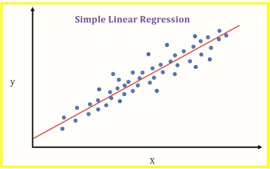
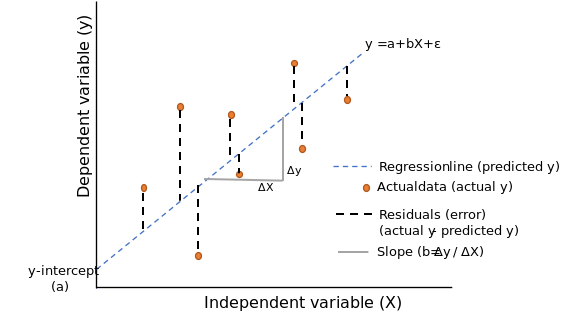
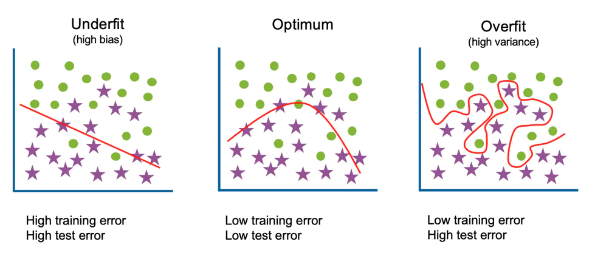
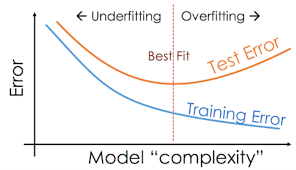

Linear Regression¶
Introduction¶
Linear Regression is a machine learning algorithm based on supervised learning. It performs a regression task i.e to predict a continous value. Linear regression attempts to model the relationship between two variables by fitting a linear equation to observed data. One variable is considered to be an explanatory variable, and the other is considered to be a dependent variable. For example, a modeler might want to relate the weights of individuals to their heights using a linear regression model.
Regression models a value based target prediction on independent variables. It is mostly used for finding out the relationship between variables and forecasting. Different regression models differ based on – the kind of relationship between dependent and independent variables, they are considering and the number of independent variables being used.
Simple Linear Regression¶
In This Section we will discuss Simple Linear Regression. Simple linear regression is a type of regression analysis where the number of independent variables is one and there is a linear relationship between the independent(x) and dependent(y) variable.
Linear regression performs the task to predict a dependent variable value (y) based on a given independent variable (x). So, this regression technique finds out a linear relationship between x (input) and y(output) and variation in predicted value from actual answer is due to random noise . Hence, the name is Linear Regression.
Simple linear regression is used to find out the best relationship between a single input variable (predictor, independent variable, input feature, input parameter) & output variable (predicted, dependent variable, output feature, output parameter) provided that both variables are continuous in nature. This relationship represents how an input variable is related to the output variable and how it is represented by a straight line.
To understand this concept, let us have a look at scatter plots. Scatter diagrams or plots provides a graphical representation of the relationship of two continuous variables.

Objective¶
In The above Diagram X(Independent variable) is plotted Against Y(Dependent variable) Blue points Represent The Data. The red line in the above graph is referred to as the best fit straight line. Based on the given data points, we try to plot a line that models the points the best. The line can be modelled based on the linear equation shown below.
\(Y = m\times X + c\) is the general equation of univariate linear relation between variables. Where-
m is the slope of line,
X is the input data,
c is y intercept, also called bias
The motive of the simple linear regression algorithm is to find the best values for m and c and then use to predict values. The line having that value of m and c which is used for prediction is called Best Fit Line For above given example red line is the best fit line.
Loss Function Or Cost Function¶
To measure how close our model’s prediction is to the actual values we have to select a method to measure it for every prediction we make. Choosing this is very important as we will improve our parameters by minimising the loss given by loss function.

Taking diffrence in the value of all predicted points to it’s actual value and then sqauring it up and then adding all values will give us the total error in the prediction.
Squaring prevents the negative value to decrease the total error when addition will be performed
This function is called Cost Function Or Loss Function There can be different types of cost function above discussed cost function Squared Error Dividing The value by total no. of data points will result in Mean Squared Error
Squared Error¶
Loss = \(\sum_{i=1}^n (Y_{actual}{i}-Y_{pred}{i})^2\)
We have to minimise the loss thus minimise the above written expression. Looking Closely the expression L (Loss) is function of two values \(Y_{actual}\) and \(Y_{pred}\) which is the actual given answer of the data and the predicted value by our machine learning model respectively. As Discussed Above in case of univariate linear regression predicted value of y will be calculated from equation of line i.e.
\(Y_{pred} = m \times X+ c \hspace{1cm} \begin{cases} \text{ m => Slope} \\ \text{ c => y-intercept} \end{cases}\)
So the Loss Function becomes:
\(Loss = \sum_{i=1}^n (Y_{actual}{i}-m*X_{i}-c)^2\)
L (Loss) is function of three values \(Y_{actual}\) ,m and c
As \(Y_{actual}\) are constant and is fixed for a single case L (Loss) is dependent on two values m and c. Objective is to find value of m and c such that loss is minimum. Minimizing Loss here means minimizing the total error of the model.
Proof For Univariate Linear Regression¶
The below proof uses application of derivatives (Minima) concept you can refer to mentioned video for quick revision or your high school notes for more indepth intiution https://www.youtube.com/watch?v=pInFesXIfg8
Loss function :-
\(L = \sum_{i=1}^n (Y_{actual}{i}-m*X_{i}-c)^2\)
where, L is Loss
The optimal value of parameters(in this case m and c) occurs when loss(l) is minimum
To find the value of \(m\) and \(c\) for which \(L\) is minimum, for that we will calculate derivative of \(L\), with respect to \(m\) and then \(c\) and then put is equal to 0 to find the critical value of \(m\) and \(c\) where \(L\) is minimum.
As there are two independent variables(m,c) We have to calculate partial derivative and then calculate minima. You can read more about partial diffrentiation here-
\(L = \sum_{i=1}^n (Y_{actual}{i}-m \times X_{i}-c)^2\)
First calculating for c:-¶
\(\dfrac{\partial L}{\partial c}=0\)
\(\dfrac{\partial( {\sum_{i=1}^n (Y_{actual}{i}-m \times X_{i}-c)^2})}{\partial c}=0\)
\(\sum_{i=1}^n{\dfrac{\partial(Y_{actual}{i}-m \times X_{i}-c)^2}{\partial c}}=0\)
Applying Chain Rule:-
\(\sum_{i=1}^n 2 \times (Y_{actual}{i}-m \times X_{i}-c) \times (-1)=0\)
\(\sum_{i=1}^n (Y_{actual}{i}-m \times X_{i}-c)=0\)
Closely observing above equation you will find that it is the sum of all \(Y_{actual} - Y_{pred}\) which is also called sum of residuals.
Thus, Above eqution proves that for the best fit line sum of all residuals is zero
\(\sum_{i=1}^n Y_{actual}{i} - \sum_{i=1}^n m \times X_{i} - \sum_{i=1}^n c = 0\)
\(\sum_{i=1}^n Y_{actual}{i} - m \times \sum_{i=1}^n X_{i} - n \times c = 0\)
Dividing The Whole Equation By n:-
\(\dfrac{1}{n} \times \sum_{i=1}^n Y_{actual}{i} - m \times \dfrac{1}{n} \times \sum_{i=1}^n X_{i} - c =0 \hspace{1.5cm}\) –> Equation 1
We can write this equation as:
\(\dfrac{1}{n} \times \sum_{i=1}^n Y_{actual}{i} = Y_{mean} \hspace{1cm}\) —- equation A
\(\dfrac{1}{n} \times \sum_{i=1}^n X_{i} = X_{mean} \hspace{1.5cm}\) —- equation B
Putting values From A and B in equation 1:-
\(Y_{mean} - m* X_{mean} - c =0 \)
\(\therefore c= Y_{mean} - m\times X_{mean}\)
Hence we got the optimal value for c in terms of mean of y and x and m. Every value in above expression can be calculated with the help of given data, as further in the proof we are gonna find the optimal value of m
Calculating for m:-¶
\(\dfrac{\partial L}{\partial m}=0\)
\(\dfrac{\partial( {\sum_{i=1}^n (Y_{actual}{i}-m \times X_{i}-c)^2})}{\partial m}=0\)
\(\sum_{i=1}^n{\dfrac{\partial(Y_{actual}{i}-m \times X_{i}-c)^2}{\partial m}}=0\)
Applying Chain rule:-
\(\sum_{i=1}^n 2 \times (Y_{actual}{i}-m \times X_{i}-c) \times (-X_{i})=0\)
\(\sum_{i=1}^n (Y_{actual}{i}-m \times X_{i}-c) \times (X_{i})=0\)
\(\sum_{i=1}^n (Y_{actual}{i} \times X_{i}-m \times X_{i}^2-c \times X_{i})=0\)
Putting optimal value of c derived above in the proof:-¶
\(\sum_{i=1}^n (Y_{actual}{i} \times X_{i}-m \times X_{i}^2-(Y_{mean}-m \times X_{mean}) \times X_{i})=0\)
\(\sum_{i=1}^n (Y_{actual}{i} \times X_{i}-m \times X_{i}^2-Y_{mean} \times X_{i}+m \times X_{mean} \times X_{i})=0\)
\(\sum_{i=1}^n Y_{actual}{i} \times X_{i}-\sum_{i=1}^n m \times X_{i}^2-\sum_{i=1}^n Y_{mean} \times X_{i}+\sum_{i=1}^n m \times X_{mean} \times X_{i}=0\)
\(\small{\sum_{i=1}^n Y_{actual}{i}*X_{i}-m*\sum_{i=1}^n X_{i}^2-Y_{mean}*\sum_{i=1}^n X_{i}+m*X_{mean}*\sum_{i=1}^n X_{i}=0}\)
Dividing whole Expression By n :-
\(\dfrac{1}{n} \times \sum_{i=1}^n Y_{actual}{i} \times X_{i}-m \times \dfrac{1}{n}\sum_{i=1}^n X_{i}^2-Y_{mean} \times \dfrac{1}{n} \times \sum_{i=1}^n X_{i}+m*X_{mean} \times \dfrac{1}{n} \times \sum_{i=1}^n X_{i}=0\)
Looking closely to the above written expression we can conclude that
\(\dfrac{1}{n} \times \sum_{i=1}^n Y_{actual}{i} \times X_{i}= (X \times Y)_{mean}\) —–equation C
\(\dfrac{1}{n}\sum_{i=1}^n X_{i}^2 = X^2_{mean}\) ——equation D
Using equation A,B,C and D :-
\((X \times Y)_{mean}-m \times X^2_{mean}-Y_{mean} \times X_{mean}+ m \times X_{mean} \times X_{mean} =0\)
\((X \times Y)_{mean}-m \times X^2_{mean}-Y_{mean} \times X_{mean}+ m \times (X_{mean})^2 =0\)
Please note the diffrence between \(X^2_{mean}\) and \((X_{mean})^2\)
\(-m \times (X^2_{mean}-(X_{mean})^2) +(X \times Y)_{mean}-Y_{mean} \times X_{mean}=0\)
\(-m \times (X^2_{mean}-(X_{mean})^2) =-((X \times Y)_{mean}-Y_{mean} \times X_{mean})=0\)
\(m \times (X^2_{mean}-(X_{mean})^2) = ((X \times Y)_{mean}-Y_{mean} \times X_{mean})=0\)
\(\therefore m= \dfrac{(X \times Y)_{mean}-Y_{mean} \times X_{mean}}{X^2_{mean}-(X_{mean})^2}\)
Hence we got the optimal value for m in terms of mean of y, x, x^2 ans y*x. Every value in above expression can be calculated with the help of given data
Conclusion¶
For the best fit line in case univariate simple linear regression value of parameter m and c are-
\(m= \dfrac{(X \times Y)_{mean}-Y_{mean} \times X_{mean}}{X^2_{mean}-(X_{mean})^2}\)
and
\(c= Y_{mean} - m \times X_{mean}\)
One important fact is that equation for parameters are not universal or fixed and is dependent on the loss function we choose in this case the formula are so because we used Squared error any other loss method may result in diffrent formula but Optimal value of parameters for linear regression is fixed
Thus if chosen correct loss function and minimisation technique final value of m and c will be fixed for a given set of data
Code¶
import numpy as np
import matplotlib.pyplot as plt
Below is a House price dataset, having only single feature of land size. So X contains land size(in sq. feet) of some houses of a locality, and y contains their corresponding price (in crores).
X looks like :
[[1599.60448522],
[1793.63237666],
[4588.03138463],
[3621.75315899],
[4343.08060035],...
50 instances]
y looks like:
[2.65917039, 2.27477643, 5.08075256, 3.97100962, 4.61060872,... 50 instances]
# First 10 data points
print(X[:10,:])
print("-------------------------")
print(y[:10])
[[1599.60448522]
[1793.63237666]
[4588.03138463]
[3621.75315899]
[4343.08060035]
[1754.65388987]
[2864.89328112]
[5610.65542828]
[5314.54707608]
[4114.90954614]]
-------------------------
[2.65917039 2.27477643 5.08075256 3.97100962 4.61060872 2.36864491
3.52940456 5.92555912 6.01264913 5.09355588]
# Loading the data
X, y = np.load("Data/KNN/Regression/X_data.npy"), np.load("Data/KNN/Regression/Y_data.npy")
print(X.shape,y.shape)
(50, 1) (50,)
# Viualizing data
plt.scatter(X,y)
plt.xlabel("Land Size (in sq. feet)")
plt.ylabel("House Price (in crores)")
plt.show()

class SimpleLinearRegression:
def __init__(self):
#intializing the parameters
self.m=0
self.c=0
def fit(self,X,y):
# calculating required values
xy_mean = (X * y.reshape(-1,1)).mean()
x_mean = X.mean()
y_mean = y.mean()
x_2_mean = (X**2).mean()
# calculating parameters
self.m = (xy_mean - y_mean*x_mean)/(x_2_mean - (x_mean)**2)
self.c = y_mean - self.m*x_mean
def predict(self,x):
y_pred=self.m*x+self.c
return y_pred
def r2_score(self,y_true,y_pred):
y_mean=y_true.mean()
ratio=((y_true-y_pred)**2).sum()/((y_true-y_mean)**2).sum()
r2_score=1-ratio
return r2_score
# Training of the model
regressor=SimpleLinearRegression()
regressor.fit(X,y)
# Making Predictions
y_pred=regressor.predict(X)
print(y_pred.shape)
(50, 1)
# Visulaizing best fit line
plt.scatter(X,y)
plt.plot(X,y_pred,c="red")
plt.xlabel("Land Size (in sq. feet)")
plt.ylabel("House Price (in crores)")
plt.show()

The red line shown above is the best fit line and is used for predictions
R2 Score¶
We use given data to calculate the parameters and then form the best fit line this process is called Training of the model now we can use the trained model to predict further unseen data this process is called Testing
To measure how good our model is on testing data we use different methods one such method is calculating accuracy which is no. of correct prediction made But the most widely used measure is r2 score
The idea behind r2 score is to compare the model with the mean model which is let’s assume you are given some data and asked to predict the answer for some unseen data your most safe bid will we to calculate the mean and give that as the answer this is the most basic method with which you can answer.
The whole motive of the Machine learning algorithm was to learn from data and then give the answer thus, our model should be compared from the most basic thing we can do to answer that same question which is the mean model
Generally, the Range of r2 score lies between 0-1 as if our model’s error is equal to mean model error value of r2 score will be zero if our model is so bad that it’s error is even greater than that of mean model value of r2 score will be negative and when our model error will be zero it will have the highest value of 1
Therefore, Higher The r2 score better the model

Formula for calculating r2 score¶
\(R^2 = 1 - \dfrac{\sum_{i=1}^{n}(Y_{actual}{i}-Y_{pred}{i})^2}{\sum_{i=1}^{n}(Y_{actual}{i}-Y_{mean})^2}\)
Code For R2 Score¶
For the coding part it can be easily calculated by loops and mathematical operation in python or my numpy operations(as shown above in the code), but for this i also want to introduce sklearn to you. sklearn is a very popular machine learning library and has many operation we will be discussing it in brief in further topics. it can be easily installed by running
pip install sklearn
in your command prompt or terminal or
!pip install sklearn in a your jupyter notebook code cell
r2_score function takes two argument y_true which is a array containing true(actual) values and y_pred array of our predicted values by our model
r2_score(y_true, y_pred, *, sample_weight=None, multioutput='uniform_average')
y_actual=y.reshape(-1,1)
from sklearn.metrics import r2_score #importing the fuction
score=r2_score(y_actual,y_pred) #calling and passing arguments to the function
print(score)
0.9373050951142091
Comparing with self-made r2 score function
score2=regressor.r2_score(y_actual,y_pred)
print(score2)
0.9373050951142091
Hence we have got r2 score of about- 0.937
You can read more about r2 score from here-
and about sklearn coding’s part from here-
Assumptions of Linear Regression¶
When we apply linear regression in general to any dataset we take assumption about that these assumptions help us to apply pre-defined set of rules and formula to determine paarmeters. if any of such assumption fails there will be a drop in both training and testing accuracy.
There are four general assumptions associated with a linear regression model:
Linearity: The relationship between X and the mean of Y is linear.
Homoscedasticity: The variance of residual is the same for any value of X.
Independence: Observations are independent of each other.
Normality: For any fixed value of X, Y is normally distributed.
To read more about assumptions and there influence when trainig the linear regression model you can refer to the following link- https://towardsdatascience.com/assumptions-of-linear-regression-fdb71ebeaa8b
Overfitting and Underfitting¶
Overfitting¶
Overfitting is a concept in data science and machine learning, which occurs when a statistical model fits exactly against its training data. When this happens, the algorithm unfortunately cannot perform accurately against unseen data, defeating its purpose. Generalization of a model to new data is ultimately what allows us to use machine learning algorithms every day to make predictions and classify data.
When machine learning algorithms are constructed, they leverage a sample dataset to train the model. However, when the model trains for too long on sample data or when the model is too complex, it can start to learn the “noise,” or irrelevant information, within the dataset. When the model memorizes the noise and fits too closely to the training set, the model becomes “overfitted,” and it is unable to generalize well to new data. If a model cannot generalize well to new data, then it will not be able to perform the classification or prediction tasks that it was intended for.
Low error rates and a high variance are good indicators of overfitting. In order to prevent this type of behavior, part of the training dataset is typically set aside as the “test set” to check for overfitting. If the training data has a low error rate and the test data has a high error rate, it signals overfitting.
Underfitting¶
Underfitting is a scenario in data science and machine learning where a data model is unable to capture the relationship between the input and output variables accurately, generating a high error rate on both the training set and unseen data. It occurs when a model is too simple, which can be a result of a model needing more training time, more input features, or less regularization. Like overfitting, when a model is underfitted, it cannot establish the dominant trend within the data, resulting in training errors and poor performance of the model. If a model cannot generalize well to new data, then it cannot be leveraged for classification or prediction tasks. Generalization of a model to new data is ultimately what allows us to use machine learning algorithms every day to make predictions and classify data.
High bias and low variance are good indicators of underfitting. Since this behavior can be seen while using the training dataset, underfitted models are usually easier to identify than overfitted ones.

One of the way to identify whether the model is getting overfitted or underfitted is to look at the error as mentioned above in the diagram.
An underfitted model will give high error in both training and testing(validation) data
A overfitted model will give low error in case of training data but comparatively high error on testing(validation) data
There is a connection between these two, as to prevent underfitting you will want your model to be flexible enough to take on irregular distribution of data but that increases the chances of overfitting of the model, thus it is neccessary to stop at an optimal complexity for the model.

Further Reading¶
You can read more about r2 score from here-
https://en.wikipedia.org/wiki/Coefficient_of_determination
and about sklearn coding’s part from here-
https://scikit-learn.org/stable/modules/generated/sklearn.metrics.r2_score.html
https://towardsdatascience.com/assumptions-of-linear-regression-fdb71ebeaa8b